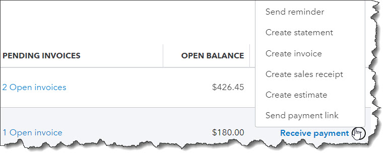
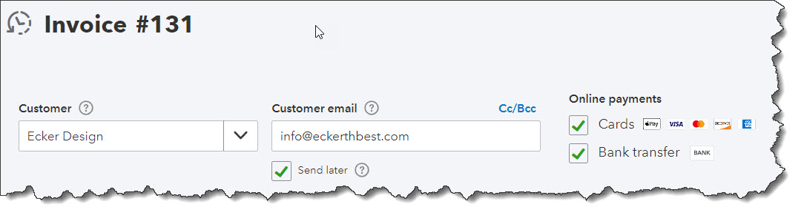

QuickBooks Online can enhance your company’s bottom line by improving your cash flow, customer relationships, inventory balance, and your future.
QuickBooks Online is really good at a lot of things. It helps you create and manage contact records and sales forms. It can keep you apprised of your online account transactions and balances and help you pay your bills. It simplifies customer payments and provides easy-to-use templates for reports.
But it’s much more than just an online bookkeeper. It can get the numbers right, but it can also help get them headed in the right direction by providing tools in several areas. When you take advantage of them, you’ll see the positive impact they can have on your company’s financial health.
Preparing for Positive Change
Maybe you already know about some or all of these tools but just haven’t incorporated them into your regular workflow. Most of them are actions you can take on your own, though you may want our help on at least one of them. Set a goal to try these for three months, and you’ll see whether they help your company experience:
Improved Cash Flow
You know you should be doing what you can to maximize income and minimize expenses. But do you know you can achieve at least modest improvements in these areas without a great deal of effort? To do so, you just have to be very aware of what you’re bringing in and purchasing.
Click Get paid & pay, then Customers. The colored bars at the top show you unfinished business: unresolved estimates, unbilled activity, and overdue and open invoices. Related transactions appear when you click on one. You’ll probably discover that you have some money just sitting there, waiting to be processed by, for example, sending reminders and statements.
The Customers page displays transactions that need additional attention to bring in the money you’re owed.
Next, go to Bookkeeping | Transactions | Expenses. Filter your account register so you only see Expenses, then do the same for Bills. Assign a Category to any that are blank. Now when you run reports, you’ll be able to see where your spending needs to be reined in. Taxes and reports will be more accurate – and more useful.
Smart Inventory Levels
Does your business sell products? If so, you know what a balancing act it is to maintain a stable level of inventory. You may have seen what happens when you run out of a particular product unexpectedly. Not only did you lose the sale, but you might have lost the customer completely. And if you carry too much stock that isn’t selling, you’re tying up money unnecessarily.
QuickBooks Online allows you to create detailed inventory records that include the number of items you have on hand initially and your self-imposed reorder point. When you look at an item record, you’ll see how many are currently in your possession and when you need to reorder based on how sales have reduced inventory. Reports that might be helpful here include Physical Inventory Worksheet and Sales by Product/Service Detail.
Faster Customer Payments
In addition to the action described above, there are a number of reports you can run to see whether customers are late with invoice payments. These include Open Invoices, Unbilled Time, and Accounts Receivable Aging Detail. You’ll find these under Who owes you. If you learn that some customers are paying late, consider setting up a merchant account through QuickBooks Payments so you can accept credit and debit cards and ACH payments. You may find that customers pay faster when it’s more convenient to do so.
Your customers will be likely to pay faster if you make it easier for them to do so.
Better Customer Relationships
Your customers are the lifeblood of your company. Are you going beyond simply filling their orders? Unless you have hundreds of them, you might want to keep an eye on their buying habits and initiate some contact between purchases – especially if there’s a lengthy gap between orders.
QuickBooks Online’s Customer pages provide what you need to know, including a real-time status update on their estimates, invoices and sales receipts, and payments. You might want to be in touch if they haven’t ordered for a while and offer them a one-time discount. Or notify them of new products or services they might like. Frequent customers deserve special attention, too. Sales by Customer Summary can be a helpful report here.
A Clearer Path Forward
QuickBooks Online is very good at providing reports that help you make short-term decisions. But to truly understand the current state of your company’s financial health and make longer-term plans, you really need to see and understand your financial statements, like Balance Sheet, Profit and Loss, and Statement of Cash Flows. You’ll find these under For my accountant. They’re easy to create, but it really takes a trained processional to analyze and interpret them for you.
We’d be happy to take this on this critical task, at least on an annual basis, if not quarterly or monthly. In the meantime, let us know if you have questions about QuickBooks Online’s operations or concerns about your use of it. Hope you’re enjoying the summer!